快速求幂
快速求幂
二进方法
设 为一乘法群，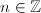（可只为乘法半群，此时限定），计算的幂次是在计算机代数系统中到处出现的运算（尤其是的情形），因此快速进行求幂起着非常基本的作用。最平凡的方法需要
为一乘法群，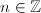（可只为乘法半群，此时限定），计算的幂次是在计算机代数系统中到处出现的运算（尤其是的情形），因此快速进行求幂起着非常基本的作用。最平凡的方法需要 个乘法，不过我们有办法大幅地改进乘法的次数。
个乘法，不过我们有办法大幅地改进乘法的次数。
一个启发性的想法是二分策略。例如我们要求，而11的二进制表示为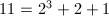，可以依次求出，再计算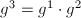及，总共只用了5次乘法便得到了结果。这种方法被称为自右向左的二进方法（Right-left Binary）。另外还有一种自左向右的二进方法（Left-right Binary）：对于上面的例子依次求出，，，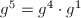，，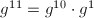，同样用5次乘法得到结果。
 步（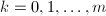)执行：
步（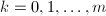)执行：
- 计算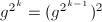。
- 若，则令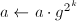。
- 若，输出
 ，算法终止。
，算法终止。
步（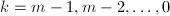)执行：
- 若，则。
- 若，则，。
- 若，输出，算法中止。
 进方法，窗口方法及加法链
进方法，窗口方法及加法链
二进方法的一个很自然的推广就是进方法，利用 的进表示，类似二进方法的平方而不断地进行次幂。的情形尤其简单，因此在实践中也很常用。不同于二进方法，进方法还需要额外储存的值。
的进表示，类似二进方法的平方而不断地进行次幂。的情形尤其简单，因此在实践中也很常用。不同于二进方法，进方法还需要额外储存的值。
 进方法的进一步改进是所谓窗口算法(Window Method)，取一个固定长度
进方法的进一步改进是所谓窗口算法(Window Method)，取一个固定长度 的“窗口”，用窗口自左向右扫描的二进表达，计算窗口内的乘幂（往往预先计算好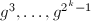），然后通过乘幂将窗口向右平移，将下一个窗口内的数乘以已经得到的幂，再重复平移过程。例如考虑。用8进方法需要102次乘法，而通过长度4的窗口算法可以减少到93次[2]，下式表示了此窗口算法的过程。
的“窗口”，用窗口自左向右扫描的二进表达，计算窗口内的乘幂（往往预先计算好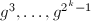），然后通过乘幂将窗口向右平移，将下一个窗口内的数乘以已经得到的幂，再重复平移过程。例如考虑。用8进方法需要102次乘法，而通过长度4的窗口算法可以减少到93次[2]，下式表示了此窗口算法的过程。
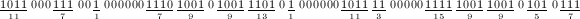
二进方法的乘法次数较平凡算法有本质的减少，一个很自然的问题是：计算次幂所需要的最少乘法次数是多少？这等价于求的加法链的最短长度[3]。构造最短长度的加法链是较为困难的问题，在实践中只能构造“近似”最短的加法链。一个构造方法是通过“幂树”，其构造方法是：首先在第一层置1，当置完层后，从左到右依次取第层每个节点，在其下附加节点，其中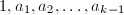是树根到的到的通路上的点，但已出现的节点不予添加。下图显示了前4层幂树。
| 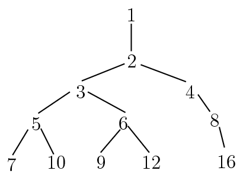 |
| 前4层幂树 |
有了幂树之后，当我们要计算某个次幂时，只需要在该树上找到，依次计算从根节点到的路径上的幂次即可。
幂树构造简单，但对较大的树的规模会很大（实际得到了以下所有数的近似加法链）。有许多启发性的算法来构造直接的近似最短加法链（参见[2],[4]）。
另外窗口算法和加法链也可以结合起来使用。由于当窗口长度增加时，需要预先计算的 的幂数量增多，可以构造加法序列（含所需幂次的加法链）来减少预先的计算量。使用长度较大的窗口的确能够减少乘法的次数，例如对前面的例子，可以将93次乘法进一步减少到89次。下式显示了长度为8的窗口算法过程。
的幂数量增多，可以构造加法序列（含所需幂次的加法链）来减少预先的计算量。使用长度较大的窗口的确能够减少乘法的次数，例如对前面的例子，可以将93次乘法进一步减少到89次。下式显示了长度为8的窗口算法过程。
为椭圆曲线的特殊情形（在这里是加法群），由于元素的逆较为容易求得，可以考虑形如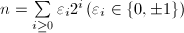的冗余二进制表示，来减少乘法次数。对于的特殊情形则有下面将要介绍的著名的Montgomery约化过程。
Montgomery约化
乘幂运算最常见还是出现在中。Montgomery[5]提出一个避免试除的计算模乘法的方法，对于 固定，需要大量乘法的模幂运算尤其有效。主要想法是将模的运算转化为模机器字长（例如
固定，需要大量乘法的模幂运算尤其有效。主要想法是将模的运算转化为模机器字长（例如 ）的运算，而后者是硬件快速实现的。
）的运算，而后者是硬件快速实现的。
 模的余数。设
模的余数。设 为一个进制的基（通常取为机器字长或其幂次），满足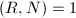，N$" class="latex-inline" style="vertical-align: -1px" width="50" height="13">。则，成立Bezout等式，我们定义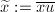，称为的Montgomery表示。
为一个进制的基（通常取为机器字长或其幂次），满足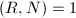，N$" class="latex-inline" style="vertical-align: -1px" width="50" height="13">。则，成立Bezout等式，我们定义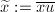，称为的Montgomery表示。
下面的快速计算的算法是Montgomery模幂乘法的核心。
 为整数。再由，知，从而，即有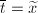。最后由，，知，可得算法的有效性。
□
为整数。再由，知，从而，即有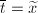。最后由，，知，可得算法的有效性。
□
下面的命题表明，在Montgomery表示下，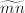即表示与的乘积。
为求，首先将 逆变换为Montgomery表示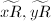，再利用命题1和算法3即可。
逆变换为Montgomery表示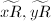，再利用命题1和算法3即可。
处理，这可利用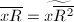来完成，而作为一个固定的常数可预先计算好，反复使用。在求幂的过程中，由于固定，只需要在第一步逆变换为Montgomery表示，中间结果全部用Montgomery表示来运算（运用算法1或2），并对最终结果变换回正常表示即可，由此加快了求幂的运算速度。
 （为奇数），先对用算法
（为奇数），先对用算法
幂次检测
在许多算法中（例如SQUFOF），需要判断一个整数是否是完全平方数（更一般地判断是否为素数幂），如果是的话，还要求出其平方根。对于很大的整数，这些算法都要更有针对性，更高效一些才能满足需要。
整数开方
对于整数开方，直接动用浮点数运算显然是低效而且不精确的，但我们可以将经典到Newton迭代法做一个改进使之变得更经济。
 。
。 ，算法终止，否则跳到第二步。，均有。若且，则必有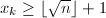。于是矛盾！从而必有。
□
，算法终止，否则跳到第二步。，均有。若且，则必有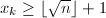。于是矛盾！从而必有。
□
平方检测
我们要判断给定的整数是否是一个完全平方数，直接用算法4计算是一个办法，不过我们在这样做之前可以首先排除许多非平方数的情形。以下运用的是简单的事实：如果是一个平方数，那么对任意整数，在中都是一个平方数。
，判断其是否为平方数，若是，求之。
- 枚举生成数组
 ，满足
类似生成另外三个数组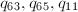。
，满足
类似生成另外三个数组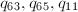。 - 若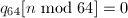，输出非平方数，算法终止；否则计算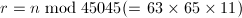。
- 若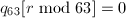或
![$q_{65}[r\bmod{65}]=0$](latex/latex2png-NumberTheory_67581397_-5.gif) 或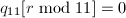，输出非平方数，算法终止。
或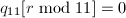，输出非平方数，算法终止。 - 用算法4计算，若不等于输出非平方数，否则输出平方根，算法终止。
非平方数，则算法进行到最后一步的可能性非常小，因为模64，63，65，11的平方数个数分别为12，16，21，6，从而这种情况发生的概率大约仅为为我们从上式也可以看出选取四个数64，63，65，11的缘由。
素数幂检测
检测一个整数是否为素数幂有时也会用到。若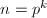，则由Fermat小定理，对于任意整数 都有，从而。
都有，从而。
 ，则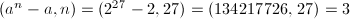。
，则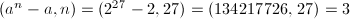。 ，则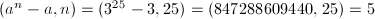。
，则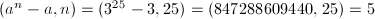。
最大公因子
相对于因子分解，求两个整数， 的最大公因子（Greatest Common Divisor，GCD）要快上许多，甚至往往超出我们的想象。用普通的个人电脑在2秒以内计算两个十万位的整数的最大公因子也不是一件难事。
的最大公因子（Greatest Common Divisor，GCD）要快上许多，甚至往往超出我们的想象。用普通的个人电脑在2秒以内计算两个十万位的整数的最大公因子也不是一件难事。
据[7]的数据，一个典型的代数运算（例如Groebner基）通常要花上一半以上时间用来计算某两个大整数的最大公因子，或许正因为最大公因子在计算机代数系统中的重要性，对它的研究才能如此深入。
为了避免混淆，在本节中始终用代表最大公因子，而出现在算法的描述中的 则仅仅代表二元有序数对。
则仅仅代表二元有序数对。
Euclid算法
最平凡的求整数，的GCD的办法是直接将两数分解，但这实在是太慢了，只在，都小于100或者已知其中之一为素数的时候才可能有些用处。早在古希腊时代人们就已经知道如何进行更高效的计算了，经典的Euclid算法虽最古老却也是最本质最有效的方法之一。
Knuth[3]通过一系列分析给出了Euclid算法终止前除法步数的精确估计。
![$[1, N]$](latex/latex2png-NumberTheory_88055285_-5.gif) ，则
，则
Lehmer加速算法
由定理1可见GCD可以在多项式时间内求出，但Euclid算法中每一步的大整数试除还是相当耗费时间，Lehmer针对这一点给出了加速的方法，其基本想法是试除的商很大程度上只与，的前若干位有关，从而可以用单精度的运算代替高精度的大整数试除。
，进行的结果是一致的，如下表。
|
|
 |
|||
|---|---|---|---|---|---|
| 27182818 | 10000000 | 2 | 2719 | 1000 | 2 |
| 10000000 | 7182818 | 1 | 1000 | 719 | 1 |
| 7182818 | 2817182 | 2 | 719 | 281 | 2 |
| 2817182 | 1548454 | 1 | 281 | 157 | 1 |
| 1548454 | 1268728 | 1 | 157 | 124 | 1 |
| 1268728 | 279726 | 1 | 124 | 33 | 3 |
我们看到直到第6步试除，与才不相等，因此可以利用与的前若干位来快速求得试除的商。一个存在问题是如何判断试商的正确性？解决方法是可以同时求另一组的试商。
| 2719 | 1000 | 2 | 2178 | 1001 | 2 |
| 1000 | 719 | 1 | 1001 | 716 | 1 |
| 719 | 281 | 2 | 716 | 285 | 2 |
| 281 | 157 | 1 | 285 | 146 | 1 |
| 157 | 124 | 1 | 146 | 139 | 1 |
| 124 | 33 | 3 | 139 | 7 | 19 |
显然若两组求得的商相同，即可判定试商是准确无误的。上表也验证了这一点。 ◇
，，且b$" class="latex-inline" style="vertical-align: -1px" width="38" height="13">，计算。设为单精度整数的上限（例如），以下，， ，
， ，，
，， 均为单精度整数（即）。
均为单精度整数（即）。
- 若，直接用Euclid算法计算输出，算法终止；若，记，为进制下，的最高位，。
- 若，，则令，否则跳到跳到第四步。若还有，则跳到第三步，否则跳到第四步。
- 令，，跳到第二步。
- 若，令，跳到第一步；否则用高精度运算直接求出，跳到第一步。
二进方法（Binary GCD）
另一种被称为二进方法（Binary GCD）方法在实践中也很有用，其主要想法是用减法和一位来代替代价较大的试除。尽管需要的运算步数增多了，但由于减法和位移运算的简单性节省出的是时间还是很可观的。
下面的定理精确的叙述了只用减法的合理性[3]。
，，且b$" class="latex-inline" style="vertical-align: -1px" width="38" height="13">，计算。
- 用高精度直接计算
 。
。 - 若，输出，算法终止；否则设
 ，，
，， ，
， 为奇数。设，通过位操作计算。
为奇数。设，通过位操作计算。 - 令，若，输出，算法终止。
- 设，为奇数，若0$" class="latex-inline" style="vertical-align: -3px" width="44" height="14">，令，否则令，跳到第三步。
扩展Euclid算法
在很多问题中（例如求模的逆）不仅需要知道，还要求出Bezout等式中的系数 ，
， ，使得成立这样的算法称为扩展Euclid算法。在原始的Euclid算法过程中保留所有的商和余数即可倒推出和来，不过这样做需要较大的空间开销。可以在计算过程中保留类似于Lehmer加速算法中的矩阵，矩阵的列实际上就是新操作数作为，线性组合的系数。
，使得成立这样的算法称为扩展Euclid算法。在原始的Euclid算法过程中保留所有的商和余数即可倒推出和来，不过这样做需要较大的空间开销。可以在计算过程中保留类似于Lehmer加速算法中的矩阵，矩阵的列实际上就是新操作数作为，线性组合的系数。
Lehmer加速算法本身就就具有了“扩展”的特性，但Binary GCD的“扩展”能力表面上看来就没有那么直接了。不过仔细追踪算法的行进过程，还是能够求出系数，来的。
，，且b$" class="latex-inline" style="vertical-align: -1px" width="38" height="13">，计算三元组。
- 用高精度直接计算。
- 若，输出，算法终止；否则设，，，为奇数。设，通过位操作计算。
- 令，。若为奇数，令
 ，跳到第五步；否则令。
，跳到第五步；否则令。 - 若均为偶数，令；否则令。
- 若为偶数，跳到第四步。
- 若0$" class="latex-inline" style="vertical-align: -3px" width="46" height="15">，令；否则令。
- 令，若，令。若，输出，算法终止；否则跳到第四步。
dmod与bmod
首先我们引进某种程度上相当于的运算dmod（digit mod）和bmod（bit mod）。
 为一个进制的基，正整数,，满足b$" class="latex-inline" style="vertical-align: -1px" width="38" height="13">，，，
为一个进制的基，正整数,，满足b$" class="latex-inline" style="vertical-align: -1px" width="38" height="13">，，， 表示在-进制表示下的位数，记。定义
表示在-进制表示下的位数，记。定义
当时（最常用的情形），简记为
可以直接验证，而且，因此新定义的运算的确在某种程度上相当于mod。而且我们可以避免试除，只用减法和位操作来计算出。最关键的是如何快速计算 ，接下来的算法只用减法和位操作解决了这个问题，想法类似于待定系数法求解，从低到高将的二进表达依次求出。
，接下来的算法只用减法和位操作解决了这个问题，想法类似于待定系数法求解，从低到高将的二进表达依次求出。
 若干次直到
若干次直到 。
。
Jebelean-Weber-Sorenson加速算法
Jebelean-Weber-Sorenson算法的基本想法来自Sorenson[9]。设，与互素，如果存在，满足使得，为求，考虑新的问题可以将缩小大约倍（这类似于Binary GCD中除以2的过程，被称为-约化）。这样的，很可能是存在的，例如考虑满足二元组，这样的二元组共有个，计算其中必有两组模同余，将其相减即得满足条件的 。下面的算法严格的构造出了。
。下面的算法严格的构造出了。
 且。
且。
 （当
（当 。
□
。
□
现在我们可以高效的计算了，不过还有一个问题，一般来说，但两者未必相等。如果直接计算前者，可能结果会包含“假因子”。通常情况下可以在最后一步处理假因子，因为根据Dirichlet的优美定理[3]，通常求出的最大公因子都会很小（的比例为82.7%），最后一步的处理只花很少时间。
 的有序数对，满足b_0$" class="latex-inline" style="vertical-align: -3px" width="51" height="15">且互素，依据的长度选取与（例如当可固定为10与32）。
的有序数对，满足b_0$" class="latex-inline" style="vertical-align: -3px" width="51" height="15">且互素，依据的长度选取与（例如当可固定为10与32）。
- 令，。
- 若，跳到第五步。
- 若s(b)$" class="latex-inline" style="vertical-align: -5px" width="138" height="18">，则令，跳到第三步；否则根据算法12求得使，令。
- 将中的因子去除（当时移位即可），并交换与，跳到第二步。
- 计算，计算输出，算法终止。
尽管一般来说“假因子”都很小，但也有例外的时候，Sedjelmaci[10]以相邻的Fibonacci数为例，当时，假因子为5，时，假因子为122542875，而当时，假因子已高达，而实际上相邻的Fibonacci数总是互素的。
不过Sedjelmaci给出了一个改进来避免假因子的影响，这依赖于以下他证明的命题。
因此可以的到改进版的Jebelean-Weber-Sorenson加速算法：
，满足b_0$" class="latex-inline" style="vertical-align: -3px" width="51" height="15">且互素，依据的长度选取与（例如当可固定为32）。
- 令，。
- 若，跳到第五步；否则令。
- 若，则令；否则根据算法12求得，，使，令。
- 将，中的因子去除（当时移位即可），跳到第二步。
- 输出，中不为零的数，算法终止。
Legendre-Jacobi-Kronecker符号
Legendre符号不仅本身很重要，而且在素性检测、因子分解等等领域中也到处出现。
下面的性质是我们在初等数论教程中熟知的。
利用命题3中的第三条便可以通过模幂运算用来计算Legendre符号，时间复杂度为。对此方法本质上的改进依赖于著名的二次互反律。
利用命题3中的第一、二条及二次互反律可以得到一个直接的计算的方法（这也是我们在初等数论课程中掌握的）。不过此方法依赖于以及某些中间结果的因子分解，而分解往往不是一件易事。但幸运的是我们还有更好的方法，可以将时间复杂度降到，这依赖于Legendre符号的推广——Kronecker-Jacobi符号。
- 若，
- 若，
- 若，
- 若为奇素数，定义为Legendre符号。
- 设，其中
 ，为素数，根据前四条定义
，为素数，根据前四条定义 - 约定当时，
 则
则Kronecker-Jacobi符号将Legendre符号推广到了所有整数的情形，并且成立以下良好的性质。
- 当且仅当。
- 对任意，有若还有，则
- 设0$" class="latex-inline" style="vertical-align: -1px" width="37" height="13">，为任意整数。若，则若
 ，则
，则 - 设，为任意整数。若，则若，则
- 设，为正奇数，则有二次互反律：且
有了如上更一般的二次互反律，我们可以得到计算Legendre-Jacobi-Kronecker符号的算法了。
- 若，输出1，算法终止；若，均为偶数，输出0，算法终止。
- 设，使为正奇数。由定义直接计算。
- 若，由定义直接计算，输出，算法终止；若，设，为正奇数，计算。
- 运用二次互反律递归地求计算，输出，算法终止。
 ，和均可通过位操作和查表获得，例如
，和均可通过位操作和查表获得，例如
中国剩余定理
中国剩余定理是为数不多以“中国”命名的重要定理——关于交换幺环结构的经典结果。为了完整性，我们以常用的 上的语言叙述如下。
上的语言叙述如下。
 （），存在唯一的整数
（），存在唯一的整数 ，存在
，存在 ，满足，从而
，满足，从而 即满足条件。唯一性是显然的。
□
即满足条件。唯一性是显然的。
□
这个构造性的证明可以得到一个直接的中国剩余定理算法，不过如果很大的话，直接求逆或许不那么划算，我们可以稍作改进。
算法本质上是求出中的系数，用代替原来的减小了求逆的复杂度。但由于需要第一步较复杂的预处理，因此更适合在 给定的情况下进行多次求解的问题。如果总是变化的话，将个方程的方程组化为组两个方程的方程组更适合一些，也就是说先求出满足（
给定的情况下进行多次求解的问题。如果总是变化的话，将个方程的方程组化为组两个方程的方程组更适合一些，也就是说先求出满足（ ）的解，再求出满足
的解等等，如此递推即可。
）的解，再求出满足
的解等等，如此递推即可。
连分数展式
任实数的（简单）连分数展式可以按照定义逐项计算（倒数、取整）。我们熟知数论中一个优美的结论：一个数的连分数展式为循环的当且仅当其为二次无理数（二次整系数方程的根）。代数系统中尤其关心的也是二次无理数的展式可否有高效稳定的算法（例如应用在因子分解的CFRAC方法，Pell方程的求解）。[11]
不失一般性，设为二次无理数，假设（否则考虑）且有连分数展式则由定义得到设，则有比较有理部分和无理部分可知
将式(1)的第二式乘以减去第一式得到
在式(2)中以代并作差得到再由(1)中第二式可知 最终得到
其中约定（利用为整数）。
最终得到
其中约定（利用为整数）。
 。
。
素数计数函数
很早人们就考虑计算小于等于的素数个数的问题，并且数论中的一个基本问题便是研究的性质（例如著名的素数定理）。古希腊人有一个直接的方法：用Eratosthenes筛将所有以下的素数给找出来，最后统计一下总数。根据Mertens第二定理[12]，其中为常数，求和针对素数 。因此这种完全筛法需要的操作次数为
。因此这种完全筛法需要的操作次数为
除了直接把所有素数求出还有没有其他办法呢？可以使用组合的工具。设代表第个素数，根据容斥原理计算以下的合数个数可以得到
 等式右端称为Legendre和。然而Lengendre和中的非零项非常多（大约有项[13]），并不适合直接应用于的计算。为了减少Legendre和中的项数，19世纪德国天文学家Meissel提出了部分筛法并正确求得了。1959年，Lehmer改进了Meissel的方法，并用计算机求得了。1985年，Lagarias，Miller，Odlyzko[13]用更精细的Meissel-Lehmer方法求得了，1996年，Deléglise和Rivat[14]证明了可以在时间和空间内计算，并将计算记录提高到了。目前的世界纪录为分布式计算项目pi(x)保持的。
等式右端称为Legendre和。然而Lengendre和中的非零项非常多（大约有项[13]），并不适合直接应用于的计算。为了减少Legendre和中的项数，19世纪德国天文学家Meissel提出了部分筛法并正确求得了。1959年，Lehmer改进了Meissel的方法，并用计算机求得了。1985年，Lagarias，Miller，Odlyzko[13]用更精细的Meissel-Lehmer方法求得了，1996年，Deléglise和Rivat[14]证明了可以在时间和空间内计算，并将计算记录提高到了。目前的世界纪录为分布式计算项目pi(x)保持的。
部分筛函数
部分筛函数定义为p_a\},$$" class="latex-display" width="580" height="19">再设p_a\}.$$" class="latex-display" width="580" height="19">约定，根据定义可以得到其中的求和实际上是有限和，因为当时恒为零。为了减少求和的项数，我们取 满足，，则求和只有三项非零：
从而我们只需要高效地求出
满足，，则求和只有三项非零：
从而我们只需要高效地求出 与即可。
与即可。
计算
由定义（总假定为正整数），p_a\},$$" class="latex-display" width="580" height="19">故有
由于，，因此可用直接用上的完全筛法在时间内求得。
计算
部分筛函数最重要的组合性质之一是如下的等式右边第一项的组合意义为对应的数中不含有因子的那部分，而第二项则表示含有因子的那部分。从而可得递推关系
由此可画出的二叉树（仅画出前三层），
| 计算$\phi(x,a)$的二叉树 |
的最大素因子。
但(3)中的求和项仍然太多，例如有三个素因子均的数的个数为。因此我们需要对二叉树进行剪枝，例如可以采取如下的剪枝规则：
- 且；（叶结点）
- y$" class="latex-inline" style="vertical-align: -4px" width="40" height="13">。（层数过深）
由如上的剪枝规则可得，其中
表示的最小素因子。
由于，，可以在的时间内计算。
计算
设，，则且p$" class="latex-inline" style="vertical-align: -5px" width="82" height="18">，式(4)变为p\atop m\le y的外层求和拆为三项 ，求和分别对，及。注意到当x^{1/4}$" class="latex-inline" style="vertical-align: -4px" width="60" height="19">时，若非素数，由p$" class="latex-inline" style="vertical-align: -5px" width="82" height="18">可知p^2>x^{1/2}\ge y$" class="latex-inline" style="vertical-align: -4px" width="135" height="19">，从而内层的求和为零，因此对
，求和分别对，及。注意到当x^{1/4}$" class="latex-inline" style="vertical-align: -4px" width="60" height="19">时，若非素数，由p$" class="latex-inline" style="vertical-align: -5px" width="82" height="18">可知p^2>x^{1/2}\ge y$" class="latex-inline" style="vertical-align: -4px" width="135" height="19">，从而内层的求和为零，因此对 和
和 可以考虑为素数的情形，且此时。
可以考虑为素数的情形，且此时。
计算
我们需要计算注意到当p>x^{1/3}$" class="latex-inline" style="vertical-align: -4px" width="90" height="19">时，，故。由可知可直接计算。
计算
我们需要计算p\atop m\le y累加（这些值可在前面量的计算过程中进行保存）。由于，，计数过程的时间复杂度为。
计算
我们需要计算注意到当\dfrac{x}{p^2}$" class="latex-inline" style="vertical-align: -15px" width="48" height="34">时，有，从而恒为1。从而可将内层的求和分为\dfrac{x}{p^2}$" class="latex-inline" style="vertical-align: -15px" width="48" height="34">与 两段，记为。立即可知
由于，因此可以通过完全筛法在时间内求得
两段，记为。立即可知
由于，因此可以通过完全筛法在时间内求得 。
。
计算
此时有，即，从而 因此有 由于，可以通过之前的筛法结果直接求得。
计算
我们需要计算这里求和的项数非常之多，因此也是算法中最复杂的部分。首先简化关于的两个限制，改写为将内外层求和分为五段，分别记为（省去求和项）
，中的求和项满足，可以通过的筛法结果进行计算，而，，只能“老老实实”地通过求和进行计算了。由于与中当固定遍历时变化不大，因此可以做一个略微的改进：通过查表来确定下一个值改变的，从而减小计算量。至此我们已经得到了计算的完整算法。
第个素数
相对对给定的数进行素性判定来说，给出第个素数是更为困难的事情，对于很大的来说，纯粹使用素性检测挨个找素数，或者利用筛法找出所有素数，都不切实际。不过我们已经知道如何计算，而在某种意义上是的“反函数”（，），我们利用这一点可以反过来计算。
Lehmer[17]提出了一个一般的求此类“逆函数”的算法，他考虑迭代取适当的初值，容易看出严格单调递增，直到后恒为常数。然而此迭代过程收敛过慢，例如求时的，取 仍需要49步迭代。
仍需要49步迭代。
我们可以考虑二分搜索的办法，估计一个区间范围![$[a,b]$](latex/latex2png-NumberTheory_35152_-5.gif) 使得落在其中，（可通过计算来确证）。然后二分区间为，，并计算判断落在哪一个自区间中，如此续行，最终搜索出的位置。
使得落在其中，（可通过计算来确证）。然后二分区间为，，并计算判断落在哪一个自区间中，如此续行，最终搜索出的位置。
Möbius函数和Euler函数
Möbius函数和Euler函数均为重要的数论函数。Möbius函数定义为 Euler函数定义为
可以用类似于计算的方法计算，从而反求出[18]。这种组合方法的时间复杂度为，但实践中未必比直接对分解根据定义计算更优，因为就算很大（例如10^{20}$" class="latex-inline" style="vertical-align: -1px" width="46" height="15">），往往也有机会可以快速地分解，然而组合方法则由于规模太大而无法使用。
对于Euler函数，我们熟知理论上重要的反演公式但同样无法直接用于的计算。实践中宜直接采取分解并根据定义计算的方法。
参考文献
[1]A Course in Computational Algebraic Number Theory, Springer Verlag, 1993.
[2]A survey of fast exponentiation methods, Journal of Algorithms 27 (1998), no.1, 129 - 146.
[3]The art of computer programming, volume 2 (3rd ed.): seminumerical algorithms, Addison-Wesley Longman Publishing Co., Inc., Boston, MA, USA, 1997.
[4]Addition chain heuristics, Advances in Cryptology - Proceedings of Crypto '89, 435 Springer-Verlag, 1990, 400 - 407.
[5]Modular Multiplication Without Trial Division, Mathematics of Computation 44 (1985), no.170, 519-521.
[6]New modular multiplication algorithms for fast modular exponentiation, Advances in Cryptology—Proceedings of Eurocrypt '96, Lecture Notes in Computer Science, 1070 Springer Berlin / Heidelberg, 1996, 166 - 177.
[7]A generalization of the binary GCD algorithm, Proceedings of the 1993 international symposium on Symbolic and algebraic computation (1993), 111-116.
[8]The accelerated integer GCD algorithm, ACM Transactions on Mathematical Software 21 (1995), no.1, 111-122.
[9]Two fast GCD algorithms, Journal of Algorithms 16 (1994), no.1, 110-144.
[10]Jebelean--Weber's algorithm without spurious factors, Information Processing Letters 102 (2007), no.6, 247-252.
[11]On continued fraction expansions for binomial quadratic surds. III, Numerische Mathematik 5 (1963), no.1, 113-117.
[12]素数论, 清华大学出版社, 北京, 2007.
[13]Computing $\pi(x)$: The Meissel-Lehmer Method, Mathematics of Computation 44 (1985), no.170, 537-560.
[14]Computing $\pi(x)$: The Meissel, Lehmer, Lagarias, Miller, Odlyzko Method, Mathematics of Computation 65 (1996), no.213, 235-245.
[15]Computing $\pi(x)$: An Analytic Method, Journal of Algorithms 8 (1987), no.2, 173-191.
[16]Computation of $\ pi(x)$ : improvements to the Meissel, Lehmer, Lagarias, Miller, Odlyzko, Deleglise and Rivat method, http://numbers.computation.free.fr/Constants/Primes/Pix/piNalgorithm.ps (2001).
[17]An inversive algorithm, Bulletin of the American Mathematical Society 38 (1932), no.10, 693-694.
[18]Computing the summation of the Möbius function, Experimental Mathematics 5 (1996), no.4, 291-295.